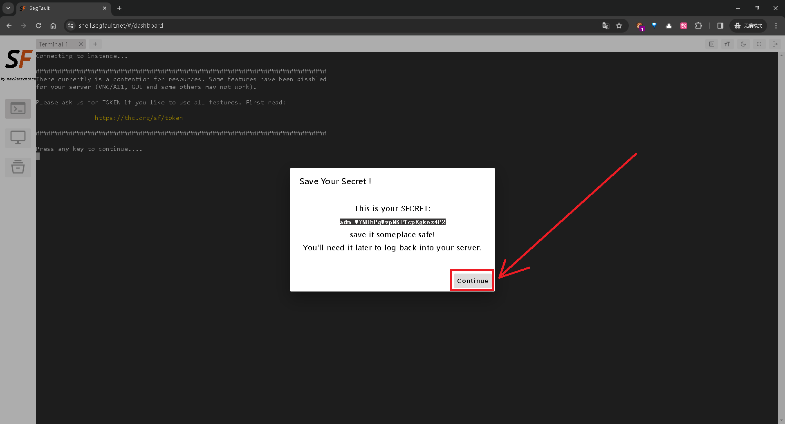
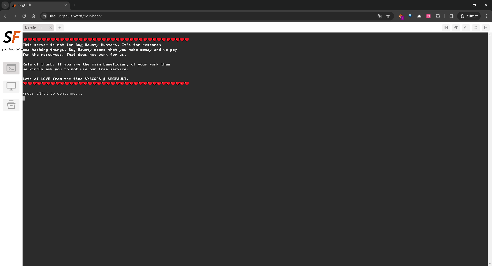
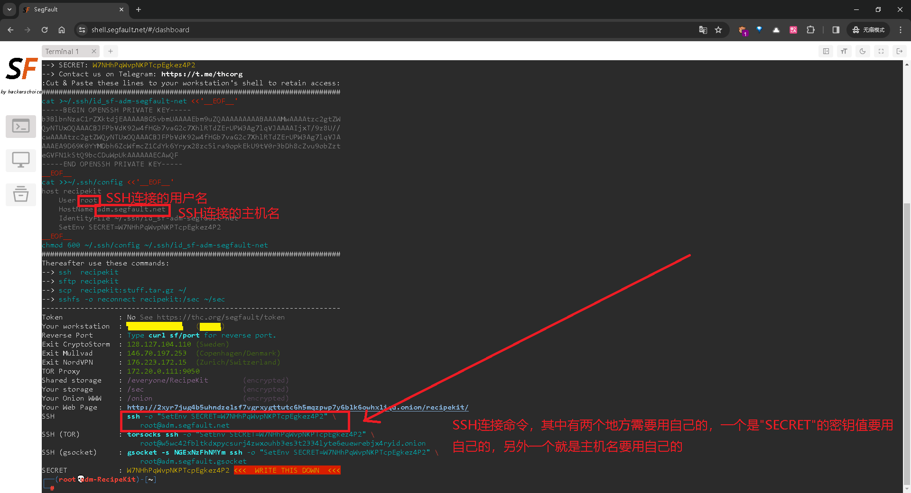
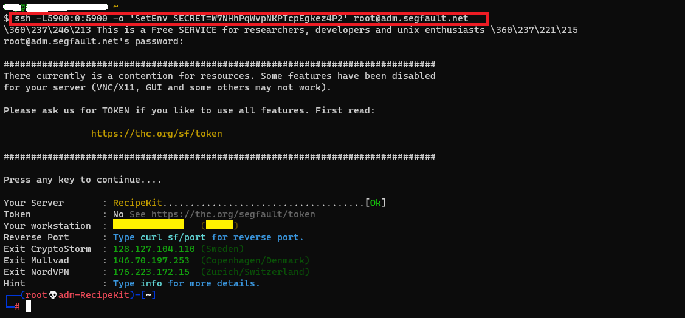
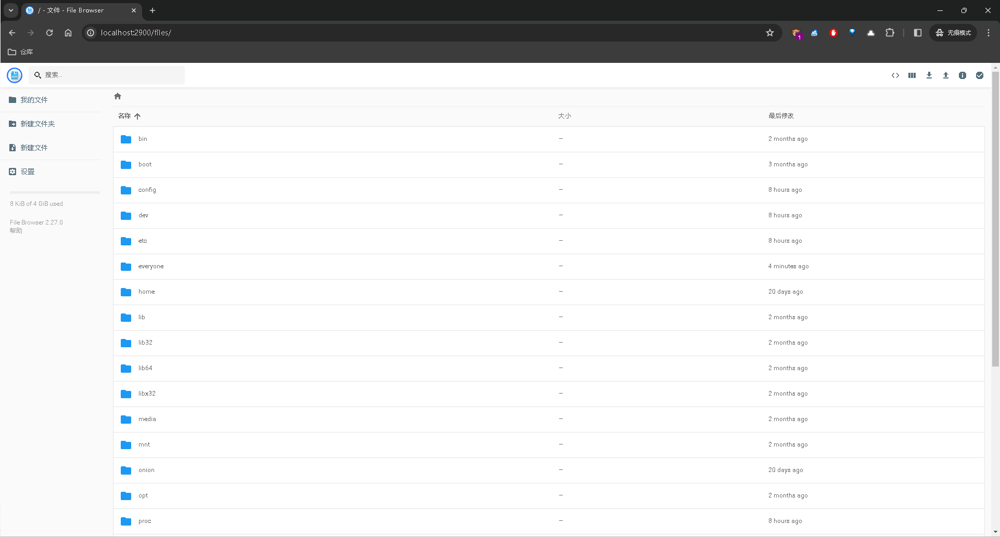

付费 VPS
raksmart
支持最低3美元的 VPS，可以用于搭建 ChatGPT，可以在 web 界面进行开关机和重装系统，重装系统时可以重置密码，配置的话通过 ssh 访问
免费 VPS
永久免费的公共 UNIX 服务器
注册方法
打开网址：https://sdf.org/ 直接填写邮箱和登录名称，确认即可注册。
注册后，请在邮箱中查找来自 SDF 的邮件，极有可能是在垃圾箱中，里面给出了服务器登录的方法，包括用户名和密码。
使用 ssh 工具，直接登录即可。
操作建议
一款持续提供35年的服务商是值得尊敬的，如果有条件可以赞助一下；筹款商店还有光盘和徽章售卖。终身会员只要36刀！
新人可以看看 freeBSD 的文档，对于提升有很大帮助：https://docs.freebsd.org/doc/
SDF 提示信息
|
|
参考链接
使用"Segfault"免费VPS教程
注册VPS
新注册一个 VPS，官方会给新注册的 VPS 分配 SECRET，把官方分配的 SECRET 保存好，每个人的 SECRET 都不一样，使用 SSH 连接的时候需要用到，不同的 SECRET 使用 SSH 连接 VPS 的时候可以避免冲突，使用 SECRET 通过 SSH 连接 VPS 的时候需要输入密码，密码都是 segfault
点击"Remote Desktop"

点击"I'm New Here"，以新用户身份注册VPS

保存官方分配的 SECRET"
我的 SECRET 是 adm-W7NHhPqWvpNKPTcpEgkez4P2

把 SECRET 保存好后点击 Continue 进行下一步进入网页终端环境中

如果光标没有进入终端环境中，可以按一下 Tab 键切入到终端环境中

进入终端环境中后根据提示进行操作，然后真正进入终端环境
终端打印了 SSH 的配置信息，其中包含了 SSH 连接命令，SSH 连接命令中 SECRET 的值就是我们刚注册时官方提示要我们保存的密钥值，在本地终端 SSH 连接远程 VPS 时一个一个敲密钥值太过麻烦，直接将之前保存的密钥值粘贴一下即可，还有一个是主机名，也是新注册 VPS 时官方分配的，例如我的是 adm.segfault.net
例如我的是：ssh -o "SetEnv SECRET=adm-W7NHhPqWvpNKPTcpEgkez4P2" root@adm.segfault.net
终端中 SSH 连接命令中有一个反斜杠 \，那是因为终端中是分现行显示的，我们在用的时候把反斜杠去掉输入一行命令即可

本地SSH连接远程VPS
新注册 VPS 的 SSH 连接密码都是segfault

VNC教程
VNC 客户端下载链接：https://www.realvnc.com/en/connect/download/viewer/windows/
第一步，运行VNC服务

运行VNC服务后提示输入并验证密码，密码 segfault，然后VNC服务询问是否设置 view-only 密码，我输入的是 n 表示不设置
|
|
第二步，启动VNC
启动VNC后提示了需要在本地终端运行"ssh -L5900:0:5900 -o 'SetEnv SECRET=W7NHhPqWvpNKPTcpEgkez4P2' root@adm.segfault.net"，作用是通过 SSH 隧道将本地端口 5900 映射到远程主机 adm.segfault.net 的端口 5900。通过这种方式，用户可以使用 VNC 客户端通过 SSH 连接到远程 VNC 图形界面
|
|
第三步，本地运行"ssh -L5900:0:5900 -o 'SetEnv SECRET=W7NHhPqWvpNKPTcpEgkez4P2' root@adm.segfault.net"进行隧道端口转发

第四步，VNC客户端连接访问 172.0.0.1:5900

成功通过 VNC 连接到远程 VPS，不过效果一般，还不如用命令行

Segfault 提示信息
|
|
安装任何你喜欢的应用
|
|
在暗网上发布你的网页
|
|
使用暗网
|
|
连接 IRCNet
|
|
允许端口转发和代理
|
|
连接到你自己的公共端口
|
|
startfb 教程
使用下面所示的端口转发登录，密码还是 segfault，登录后在vps终端键入 startfb，保持登录状态，然后将浏览器指向 http://127.0.0.1:2900
不要退出终端，不然本地无法访问 http://127.0.0.1:2900

|
|
然后在本地访问如下链接
|
|
进入如下页面

本地浏览器访问 VPS 的文件浏览器界面默认显示的是 VPS 根目录下的内容，而终端登录进 VPS 默认是在家目录下，在 VPS 的文件浏览器中要进入家目录下需要双击进入 sec/root

参考链接
https://www.thc.org/segfault/
https://www.thc.org/segfault/gui/
SSH 注意事项
首先无论是付费 vps 还是免费 vps，如果需要自己配置 ssh 连接的话一定要注意配置文件里除了默认允许密码登录授权的配置以外还要确认并配置允许 ssh 公钥登录授权，如果 vps 配置这两项都是 yes，那就不需要更改了，其他配置根据自己的需要进行修改
linux 下 ssh 配置文件路径：/etc/ssh/sshd_config
|
|
然后改动 ssh 的配置后要重新启动 ssh 服务
|
|